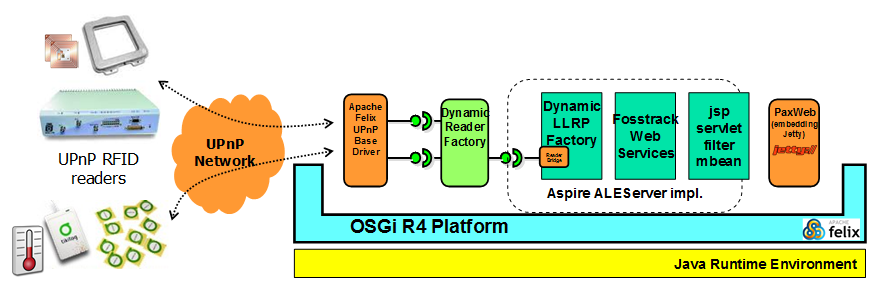

PDF
PDF History
HistoryOW2 :: AspireRFID :: UPnP RFID Reader
- 1 Context
- 2 Demonstrator
- 3 Dependencies
- 4 Build
- 5 Installation
- 6 Test
- 7 Configuration
- 8 Troubleshooting
- 9 Links
This section describes the bundle emulated an UPnP RFID Reader
1 Context
The installation of new readers and their configuration (ie LRSpec) in the ALE Server is a burden for non-expert people (shop employees for instance) in the context of SOHO. The zero-configuration can be provided by popular service discovery protocols and frameworks such as UPnP and DNS-SD (aka mDNS or Apple’Bonjour). UPnP is the defacto standard for plug-and-play appliances in the small shop and small office (SOHO) context. In order to alleviate the end-user (which is not a RFID integrator or expert), the Aspire middleware will provide a way to taken in account plug-and-play RFID readers (such as shop portals, portable readers, ..) using UPnP. Various implementations of the UPnP specification are available for Java. The Apache Felix UPnP Base Driver provides a bridge between OSGi registry and the UPnP network. It can directly integrated in the OSGi profile of the Aspire ALE Server to discover and to use the UPnP Device. This project proposes a “zero-configuration” feature for readers communicating with IP (Ethernet, Wifi) using the UPnP infrastructure. It proposes a UPnP device profile (DCP) for RFID Reader. Readers implementing this profile can be discovery automatically by the Aspire ALE server and added (dynamically and without opertaor configuration) as a regular reader thru their LRSpec description.The following figure depicts the extension of the ALE Server (OSGi profile) in order to add UPnP RFID Device.The following XML document presents the service description (DCP) of the RFID Readers is urn:schemas-ow2aspire-org:service:Reader:1 .- Properties (ro) : properties of the reader (application ...).
- Duration (rw) : duration before two notifications of the report members
- ReportMembers (subscription only) : tag identifiers scanned during a period (similar to the ECReport reportMember). The tag is are comma-separated.
<scpd>
<serviceStateTable> <stateVariable> <!-- Reader properties -->
<name>Properties</name>
<sendEventsAttribute>no</sendEventsAttribute>
<dataType>string</dataType> <!-- pairs name-value x-www-form-urlencoded -->
</stateVariable> <stateVariable> <!-- duration between 2 reports -->
<name>Duration</name>
<sendEventsAttribute>yes</sendEventsAttribute>
<dataType>ui4</dataType> <!-- in milliseconds -->
<defaultValue>1000</defaultValue>
</stateVariable>
<!-- more parameters for the reader configuration --> <stateVariable> <!-- Report members -->
<name>ReportMembers</name>
<sendEventsAttribute>yes</sendEventsAttribute>
<dataType>string</dataType> <!-- CSV of the hexadecimal representation of EPC identifiers -->
</stateVariable> </serviceStateTable> <actionList>
<action>
<name>SetDuration</name>
<argumentList>
<argument>
<name>newDuration</name>
<direction>in</direction>
<relatedStateVariable>Duration</relatedStateVariable>
</argument>
</argumentList>
</action>
<action>
<name>GetDuration</name>
<argumentList>
<argument>
<name>currentDuration</name>
<direction>out</direction>
<relatedStateVariable>Duration</relatedStateVariable>
</argument>
</argumentList>
</action>
<action>
<name>GetProperties</name>
<argumentList>
<argument>
<name>currentProperties</name>
<direction>out</direction>
<relatedStateVariable>Properties</relatedStateVariable>
</argument>
</argumentList>
</action>
</actionList>
</scpd>2 Demonstrator
A demonstrator of a UPnP RFID Reader is available. It uses the ACR122U reader. The device includes also a fictive TemperatureSensor service and a LowPower service for GreenIT purpose. In the demonstration, this service enables the deep sleep and waking up of the PC running the demonstrator (WakeOnLAN must be activate for waking up the PC).3 Dependencies
This bundle requires :- OSGi R4 Compendium, available from Felix OBR
- UPnP GenDevice Utils, available from http://svn.apache.org/viewvc/felix/sandbox/donsez/upnp.devicegen.util/
- ACR122U client bundle


{kind=link}
{kind=link}
{kind=link}